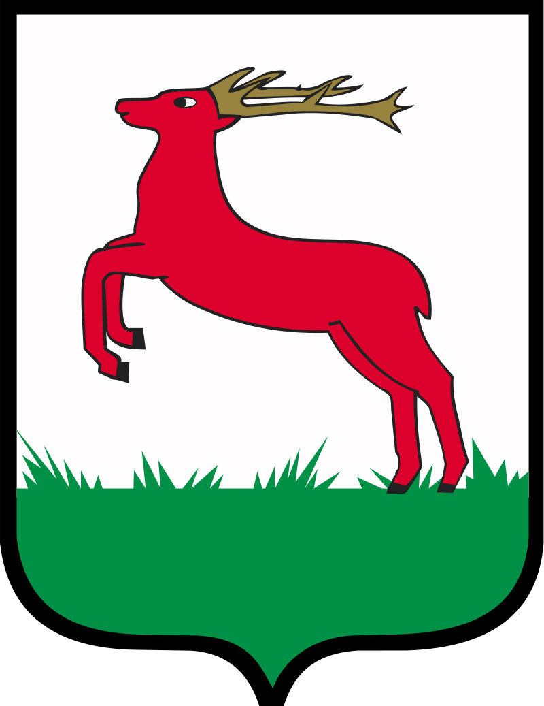
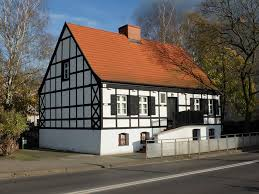
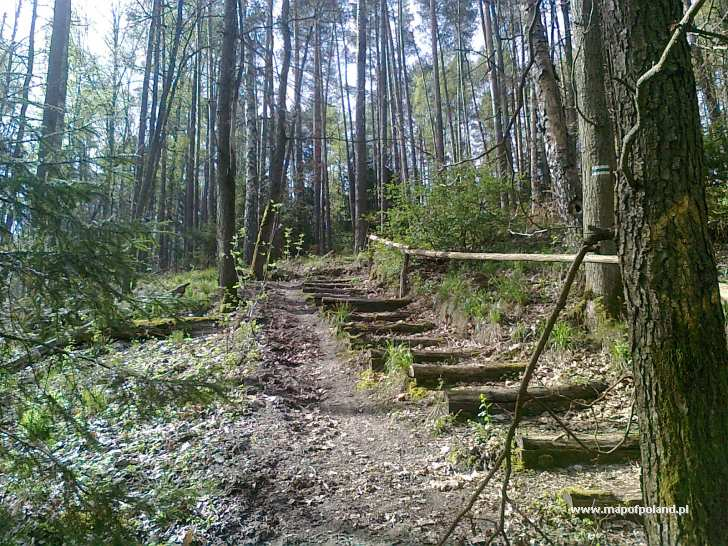

Miasto Piła
- Położenie miasta
- Herb Piły
- Historia miasta
- Ludność
- Zabytki i miejsca warte zobaczenia
- Atrakcje przyrodnicze
1. Położenie miasta
Piła – miasto w północno-zachodniej Polsce, w województwie wielkopolskim, siedziba powiatu pilskiego.
Położone na pograniczu Pojezierza Wałeckiego i Pojezierza Krajeńskiego, nad Gwdą.
2. Herb Piły

3. Historia miasta
Piła wyrosła ze starej rybackiej osady położonej wśród lasów nad rzeką Gwdą. Prawa miejskie otrzymała już prawdopodobnie w XV wieku, zostało to potwierdzone w 1513 r. przez króla Zygmunta Starego. Nie oszczędzały miasta katastrofy i zawieruchy wojenne. W roku 1626 roku miasto doszczętnie spłonęło. Odbudowane, nie oparło się wojskom szwedzkim w czasie Wojny Północnej, a największe zniszczenia przyniosła Wojna Siedmioletnia. Po l rozbiorze Rzeczypospolitej, Piła weszła w skład zaboru pruskiego. W 1755 roku w grodzie nad Gwdą urodził się najwybitniejszy obywatel miasta - Stanisław Staszic. Ten zasłużony przedstawiciel Oświecenia, ksiądz, pisarz, mąż stanu i filozof, zasłynął jako geolog twórca geologicznej mapy Polski.
Po l wojnie światowej Piła pozostała w granicach Rzeszy. W czasie II wojny światowej miasto stało się ważnym ośrodkiem przemysłu zbrojeniowego Niemiec oraz miejscem ewakuacji ludności niemieckiej z bombardowanych przez Aliantów przemysłowych okręgów Rzeszy. Na początku 1945 roku Piła została ogłoszona miastem - twierdzą, wchodząc w skład umocnień Wału Pomorskiego. W wyniku ciężkich walk, Piła legła w gruzach. Była to ostatnia straszliwa klęska w dziejach miasta, które zostało odbudowane, niemal od nowa.
4. Ludność
Piła jest pod względem liczby mieszkańców czwartym miastem województwa wielkopolskiego. Najwięcej mieszkańców – 76 849 – Piła liczyła w roku 1998.
| Liczba mieszkańców |
Powierzchnia |
Gestość zaludnienia |
| 73 139 |
102,7 km2 |
715 osob/km2 |
więcej informacji
5. Zabytki i miejsca warte zobaczenia
Kto chciałby uchylić rąbka historii, powinien wybrać się na przechadzkę szlakiem pilskich zabytków. Przetrwały do naszych czasów niektóre świątynie, wśród nich neogotycki kościół św. Stanisława Kostki z końca XIX w., neobarokowy kościół św. Rodziny na zachodnim brzegu Gwdy, a także niezwykle ciekawy pod względem architektonicznym kościół św. Antoniego z Padwy. Warto przespacerować się nielicznymi już dziś ulicami ze starą zabudową, aby przyjrzeć się kamienicom z przełomu XIX i XX stulecia. Obowiązkowo trzeba także odwiedzić dom Stanisława Staszica, w którym mieści się muzeum jego imienia.

6. Atrakcje przyrodnicze
- Park Miejski im. Stanisława Staszica
- Park na Wyspie
- W północnej części miasta położony jest rezerwat krajobrazowy „Kuźnik” oraz rezerwat faunistyczny „Nietoperze w Starym Browarze”
- Na terenie Piły znajdują się 22 pomniki przyrody: 17 pojedynczych drzew, 4 grupy drzew, głaz narzutowy
